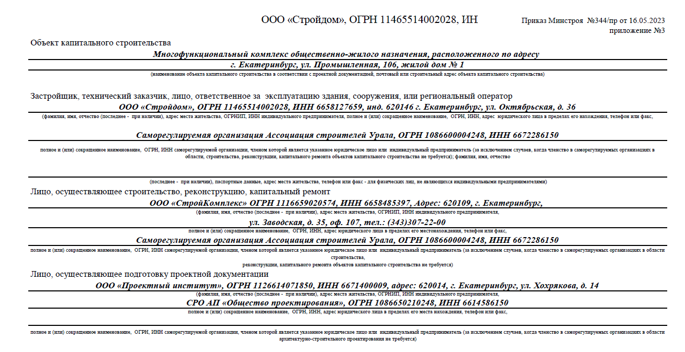
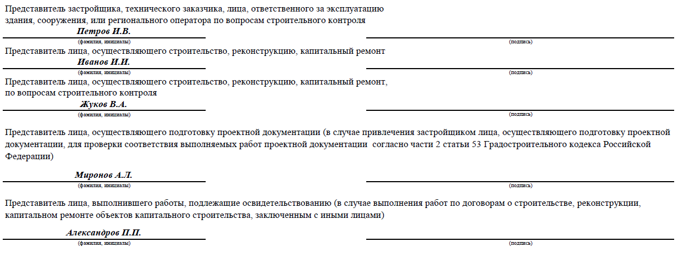
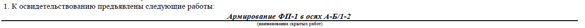
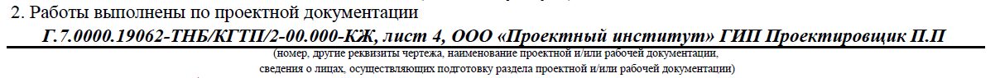
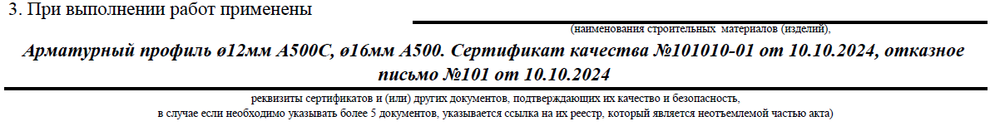
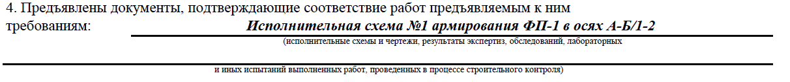
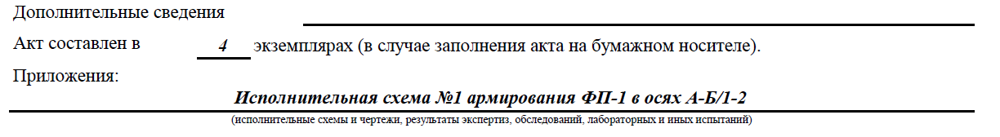

Как составлять акт освидетельствования скрытых работ (АОСР)
Если отдел ПТО неверно заполнит АОСР или вообще не проведет освидетельствование скрытых работ, то строительная организация рискует нарушить сроки выполнения работ и остаться без денег. В этом уроке вы узнаете, как составлять акт освидетельствования скрытых работ (АОСР), чтобы исключить потерю времени и финансовых затрат. Мы объясним простыми словами, «КАК» заполнить и «ОТКУДА» взять данные.

Что такое скрытые работы
Посмотрите видео и вспомните, что такое скрытые работы и для каких целей необходимо оформление АОСР.
Цель АОСР – фиксация и приемка скрытых работ в момент их окончания, а также разрешение производства последующих работ, которые скрывают уже зафиксированные
Для подрядчика подписанные акты подтверждают выполнение работ. Акты указывают, какие материалы применялись при производстве и кто эти работы принимал. Например, работы по устройству оснований, армированию железобетонных конструкций, бетонированию, устройству гидроизоляции и т.д.
Все работы скрыты последующими работами и проверить их результат в конце строительства возможно только при вскрытии требуемых участков. В последующем придется эти участки привести в первоначальный вид, не потеряв качество. Это требует времени и финансовых затрат. Чтобы не попасть в такую ситуацию, скрытые работы проверяют и подписывают АОСР (часть 4 статьи 53 ГрК).
Смотрите в памятке ниже, где именно устанавливаются перечни таких работ.
Материал к уроку (PDF)
Где искать перечни скрытых работ:
PDF получен с исходной страницы. Поля для названия организации и других персональных данных оставлены пустыми.
Если ни в одном из пунктов из памятки перечня скрытых работ нет, то используйте Приказ Минрегиона России от 30.12.2009 № 624. В Приказе утвержден перечень видов работ по строительству, реконструкции, капремонту, которые влияют на безопасность объектов капстроительства.
Как составить АОСР
Бланк АОСР представляет собой двусторонний документ формата А4. Рекомендуемая форма АОСР – приложение 3 приказа Минстроя России от 16.05.2023 № 344/пр. Условно АОСР можно разделить на пять блоков. Смотрите ниже на образцах с подсказками, как заполнять каждый раздел акта.
Блок 1. Шапка бланка.
Иллюстрация к уроку
Изображение сохранено с исходной встроенной страницы.

Обязательно согласуйте образец заполнения акта со строительным контролем заказчика перед тем как напечатать акты
Блок 2. Номер акта и дата подписания

Каждому акту присваивается индивидуальный номер, который вносится в реестр исполнительной документации. Номер может быть любым, главное, чтобы не повторялся. Может быть сквозная нумерация (1,2,3..), а может по разделам проекта (1-КЖ, 2-КЖ..). В случае, если сложная нумерация, то может добавиться еще номер корпуса (1-КЖ-1, 2-КЖ-1..). Очень удобный метод систематизации — это указание совместно с номером акта раздела проекта, например, 1-КЖ. Где 1 – порядковый номер, КЖ – шифр проекта.

Дата окончания работ и дата подписания акта – это один и тот же день, но не всегда. В случае с бетонными работами дата освидетельствования наступает, например, только на седьмые сутки, при достижении бетона 70% прочности и получении протокола от лаборатории. Если были замечания во время освидетельствования, то акт подписывается только после устранения замечаний.
Даты выполнения работ обязательно должны соответствовать датам в общем журнале работ. Дата подписания не может быть раньше даты окончания работ. Также дата окончания и дата подписания не должны быть позже даты начала последующих работ
Блок 3. Состав комиссии, участвующей в освидетельствовании скрытых работ
Данные всех лиц, которые участвуют в освидетельствовании скрытых работ, выясните на этапе заполнения шапки акта.
Иллюстрация к уроку
Изображение сохранено с исходной встроенной страницы.

Не стоит создавать себе прецедент для замечаний и вписывать в акт представителей без основания.
Основание – это распорядительный документ, подтверждающий полномочия (приказ или распоряжение, например) директора организации о том, что такое-то лицо выполняет такие-то обязанности на объекте
Блок 4. Описание скрытых работ

Укажите наименование скрытой работы, которую предъявляете. Например: «Устройство песчаного основания».
Также вы можете сделать привязку к осям здания, к отметкам, помещению, пикетажу и т.д., чтобы легко идентифицировать местоположение. Например: «Армирование ФП-1 в осях А-Б/1-2».
Некоторые представители строительного контроля заказчика могут потребовать указать наименование работ согласно ВОР проекта или КС-2. Объемы работ указывать необязательно. Если эти требования прописаны в требованиях внутреннего регламента заказчика, то укажите их.

В данной строке пропишите шифр проектной/рабочей документации, а также укажите информацию о лицах, разработавших проект. Информацию возьмите из штампов проектной/рабочей документации.

Данную строку заполните путем внесения данных наименования используемых в работе материалов и указанием документов о качестве. Применяемые материалы обязательно должны соответствовать проекту. Замену материала обязательно согласуйте с заказчиком.
Смотрите в памятке ниже, какие документы о качестве могут быть.
Материал к уроку (PDF)
Среди документов о качестве могут быть:
PDF получен с исходной страницы. Поля для названия организации и других персональных данных оставлены пустыми.
Строительные материалы, на которые не распространяются действия технических регламентов и которые при этом не включены ни в один из перечней, не подлежат обязательному подтверждению соответствия (п. 3.1 статьи 46 184-ФЗ «О техническом регулировании»). Можно приложить отказное письмо на такой материал.
У документов о качестве есть срок действия, на это надо обращать внимание. Очень часто отказ в приеме исполнительной документации возникает из-за приложенных к актам сертификатов, которые недействительны на момент сдачи работ. В случае, если необходимо указывать более 5 документов, то вносите ссылку на их реестр, который является неотъемлемой частью акта (приложением). В реестре укажите наименования материалов и ссылки на документы качества. Форма реестра не регламентирована, поэтому подготовьте его в удобном для вас формате.

Внесите результаты лабораторных испытаний, если рассматриваются монолитные работы. Помимо монолитных, есть ряд работ, которые сопровождаются различными обследованиями и испытаниями, проведенными в процессе строительного контроля.
Во всех остальных случаях указывайте исполнительную схему. Если возьмем наш пример по армированию, то необходимость исполнительной геодезической схемы на данный вид скрытой работы следует проверять по приложению А ГОСТ Р 51872-2024, проекту и согласованному перечню исполнительной документации. Но, если в перечне заказчик укажет, то допускается брать за основу проектный чертеж.

Внесите технические регламенты и нормативные акты, а также проектную/рабочую документацию, которым должны соответствовать выполненные работы. Следует продублировать шифр раздела проектной/рабочей документации в соответствии с которой проводились работы и перечислить нормативные документы, которые выполненные работы затрагивают.

Впишите наименование последующих скрывающих работ, на которые мы готовим АОСР. Это будет «Зашивка стен листами ГКЛ» в случае освидетельствования работ по монтажу металлического каркаса из профилей. В каждом конкретном случае нужно знать технологию производства работ и знать какой процесс следует за рассматриваемым видом работ.

В зависимости от ситуации в строку «Дополнительные сведения» можно и нужно написать то, что необходимо отразить в акте дополнительно. Чаще всего тут стоит отметка «Отсутствуют».
Строка с количеством экземпляров исполнительной документации должна соответствовать количеству лиц, подписывающих указанную документацию (ч. 1 Приказа Минстроя России от 16.05.2023 № 344/пр). Также количество экземпляров можно уточнить в договоре подряда.
В строке «Приложения» перечислите то, что нужно приложить к акту освидетельствования скрытых работ. Кроме того, к акту скрытых работ мы должны приложить реестр на документы о качестве, если он имеется. Для объектов культурного наследия приложением к АОСР также является фотофиксация (п. 6.10 ГОСТ Р 59492-2021).
Блок 5. Подписи ответственных лиц, участвующих в освидетельствовании
Заполняйте согласно подстрочнику: фамилии и инициалы, и соберите подписи. Порядок подписания обычно такой, как на картинке ниже.

Придерживайтесь следующих правил при подписании АОСР:
- уведомляйте о приемке скрытых работ комиссию заблаговременно, – не позднее, чем за 3 рабочих дня (пункт 9.1.29 СП 45.13330.2017, часть 11 Постановления № 468);
- не производите последующие работы, если скрытая работа не освидетельствована и не принята – это запрещено (часть 4 статьи 53 ГрК, часть 10 Постановления № 468);
- подписывайте акт только после устранения недостатков, если в процессе приемки они выявлены (часть 5 статьи 53 ГрК).
Задание
Закрепите свои знания по теме урока в БыстроКвизе. В нем всего пять вопросов. Выберите вариант ответа и проверьте его правильность.
Отлично! Переходите в следующий урок. В нем вы разберетесь, как составлять акт освидетельствования ответственных конструкций (АООК).
Самое важное
Цель АОСР – фиксация и приемка скрытых работ в момент их окончания, а также разрешение производства последующих работ, которые скрывают уже зафиксированные
Образец заполнения акта необходимо согласовать со строительным контролем заказчика перед тем как напечатать
Даты выполнения работ обязательно должны соответствовать датам в общем журнале работ. Дата подписания не может быть раньше даты окончания работы
Количество экземпляров исполнительной документации должно соответствовать количеству лиц, подписывающих указанную документацию
{kind=link}
{kind=link}